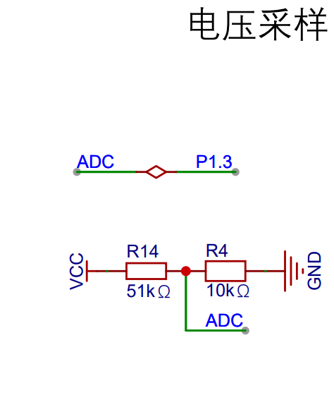

<!DOCTYPE lake>
<p data-lake-id="ua6f12de6" id="ua6f12de6"></p><p data-lake-id="ua1bde3a3" id="ua1bde3a3"><span data-lake-id="ufe87099e" id="ufe87099e">adc（Analog to Digital Converter 模数转换器）</span><span data-lake-id="u81f3e9a1" id="u81f3e9a1">是一种将模拟信号转换为数字信号的电路。在电子系统中，模拟信号常常需要转换为数字信号进行处理和存储。模数转换的基本原理是将模拟信号进行采样，并将采样值量化为数字表示。</span></p><ul list="u37b1a970"><li data-lake-id="u01a94be7" fid="ucb8ec587" id="u01a94be7"><span data-lake-id="ub272cdfd" id="ub272cdfd">采样：是指在一定时间间隔内对模拟信号进行测量，并将测量值存储在数字形式的数据中</span></li><li data-lake-id="uaaaa8a4d" fid="ucb8ec587" id="uaaaa8a4d"><span data-lake-id="ueb57ff68" id="ueb57ff68">量化：是将这些连续的模拟信号值离散化为一系列数字值，通常使用二进制表示。</span></li></ul><p data-lake-id="u32ce4652" id="u32ce4652"><span data-lake-id="u5a37d172" id="u5a37d172">简单理解，ADC是把模拟信号转换为数字信号的工具，我们可以认为，一个信号有强弱之分，强弱的体现为电压的高低。在数字电路中，只有0和1之分，也就是高电平或低电平。那么体现不了这个强弱。ADC的作用就是体现强弱，精确化的拿到具体的值。</span></p><p data-lake-id="ua31234b3" id="ua31234b3"><span data-lake-id="u1447d385" id="u1447d385">应用场景：</span></p><ol list="ue9da1791"><li data-lake-id="u1d5884d2" fid="u054a9ee9" id="u1d5884d2"><span data-lake-id="u5d5329bb" id="u5d5329bb">医疗设备：如心电图、血压计之类。</span></li><li data-lake-id="u87300fcf" fid="u054a9ee9" id="u87300fcf"><span data-lake-id="u72b7830c" id="u72b7830c">音频信号处理：在数字音频处理中，ADC将模拟音频信号转换为数字信号，然后可以进行数字信号处理和存储。</span></li><li data-lake-id="ue3c14790" fid="u054a9ee9" id="ue3c14790"><span data-lake-id="u846a2c93" id="u846a2c93">电力系统：测量电压。</span></li></ol><p data-lake-id="ua4dc9525" id="ua4dc9525"><span data-lake-id="u6bc236c3" id="u6bc236c3">总之，需要知道信号强弱的，需要将模拟信号转为数字信号的都会用到ADC。</span></p><p data-lake-id="u22648864" id="u22648864"><span data-lake-id="u4a541ab5" id="u4a541ab5">STC8H芯片有15个通道的ADC功能引脚：</span></p><table class="lake-table" data-lake-id="uN2Sy" id="uN2Sy" margin="true" style="width: 208px" width-mode="contain"><colgroup><col width="111"/><col width="97"/></colgroup><tbody><tr data-lake-id="u93c02723" id="u93c02723"><td data-lake-id="ub38fd987" id="ub38fd987" style="background-color: #CEF5F7; vertical-align: middle"><p data-lake-id="ud32ea4c0" id="ud32ea4c0" style="text-align: center"><strong><span data-lake-id="uc610acde" id="uc610acde">ADC功能</span></strong></p></td><td data-lake-id="ue52a56fb" id="ue52a56fb" style="background-color: #CEF5F7; vertical-align: middle"><p data-lake-id="u66317ea8" id="u66317ea8" style="text-align: center"><strong><span data-lake-id="u8bdb9224" id="u8bdb9224">引脚</span></strong></p></td></tr><tr data-lake-id="u7bba00cd" id="u7bba00cd"><td data-lake-id="ucd8196a4" id="ucd8196a4" style="vertical-align: middle"><p data-lake-id="u1be4c8dd" id="u1be4c8dd" style="text-align: center"><span data-lake-id="ue4d5bd64" id="ue4d5bd64">ADC0</span></p></td><td data-lake-id="u2ec1d0d4" id="u2ec1d0d4" style="vertical-align: middle"><p data-lake-id="uc0c7091c" id="uc0c7091c" style="text-align: center"><span data-lake-id="ua473c79c" id="ua473c79c">P1.0</span></p></td></tr><tr data-lake-id="u2f8c0d88" id="u2f8c0d88"><td data-lake-id="u101b832d" id="u101b832d" style="vertical-align: middle"><p data-lake-id="u1ecb0bf5" id="u1ecb0bf5" style="text-align: center"><span data-lake-id="u130cc6b2" id="u130cc6b2">ADC1</span></p></td><td data-lake-id="uabfe8093" id="uabfe8093" style="vertical-align: middle"><p data-lake-id="u6a8e5182" id="u6a8e5182" style="text-align: center"><span data-lake-id="uc1f10936" id="uc1f10936">P1.1</span></p></td></tr><tr data-lake-id="u9ba2b010" id="u9ba2b010"><td data-lake-id="u541b4d30" id="u541b4d30" style="vertical-align: middle"><p data-lake-id="u870068d5" id="u870068d5" style="text-align: center"><span data-lake-id="ue3e5d8df" id="ue3e5d8df">ADC2</span></p></td><td data-lake-id="u40b445cd" id="u40b445cd" style="vertical-align: middle"><p data-lake-id="ua899e750" id="ua899e750" style="text-align: center"><span data-lake-id="u62ed7cc8" id="u62ed7cc8">P5.4</span></p></td></tr><tr data-lake-id="u4fbd7ae5" id="u4fbd7ae5"><td data-lake-id="u3208a176" id="u3208a176" style="vertical-align: middle"><p data-lake-id="ua697dcc1" id="ua697dcc1" style="text-align: center"><span data-lake-id="u42428477" id="u42428477">ADC3</span></p></td><td data-lake-id="u372780b4" id="u372780b4" style="vertical-align: middle"><p data-lake-id="u5731a071" id="u5731a071" style="text-align: center"><span data-lake-id="u77be5707" id="u77be5707">P1.3</span></p></td></tr><tr data-lake-id="u04bbba4a" id="u04bbba4a"><td data-lake-id="uc67a7828" id="uc67a7828" style="vertical-align: middle"><p data-lake-id="u46d8eeb5" id="u46d8eeb5" style="text-align: center"><span data-lake-id="u9a329d36" id="u9a329d36">ADC4</span></p></td><td data-lake-id="u1f89213e" id="u1f89213e" style="vertical-align: middle"><p data-lake-id="u71bb4122" id="u71bb4122" style="text-align: center"><span data-lake-id="u4e337cac" id="u4e337cac">P1.4</span></p></td></tr><tr data-lake-id="u5c31009b" id="u5c31009b"><td data-lake-id="u91904458" id="u91904458" style="vertical-align: middle"><p data-lake-id="ua5738f6a" id="ua5738f6a" style="text-align: center"><span data-lake-id="u11224e24" id="u11224e24">ADC5</span></p></td><td data-lake-id="u0cbc9f06" id="u0cbc9f06" style="vertical-align: middle"><p data-lake-id="u72679ede" id="u72679ede" style="text-align: center"><span data-lake-id="u0ddf2ea7" id="u0ddf2ea7">P1.5</span></p></td></tr><tr data-lake-id="u351fe03c" id="u351fe03c"><td data-lake-id="uf3e08dc9" id="uf3e08dc9" style="vertical-align: middle"><p data-lake-id="ue1cae5c1" id="ue1cae5c1" style="text-align: center"><span data-lake-id="uef5d5a92" id="uef5d5a92">ADC6</span></p></td><td data-lake-id="u467f949f" id="u467f949f" style="vertical-align: middle"><p data-lake-id="u22433d4a" id="u22433d4a" style="text-align: center"><span data-lake-id="u8267c708" id="u8267c708">P1.6</span></p></td></tr><tr data-lake-id="u37174e6a" id="u37174e6a"><td data-lake-id="u12473bec" id="u12473bec" style="vertical-align: middle"><p data-lake-id="u3fedff59" id="u3fedff59" style="text-align: center"><span data-lake-id="u18a89dc4" id="u18a89dc4">ADC7</span></p></td><td data-lake-id="u7b60ec89" id="u7b60ec89" style="vertical-align: middle"><p data-lake-id="u243a0a68" id="u243a0a68" style="text-align: center"><span data-lake-id="u2ce0f02b" id="u2ce0f02b">P1.7</span></p></td></tr><tr data-lake-id="u42a010e2" id="u42a010e2"><td data-lake-id="u36a3baca" id="u36a3baca" style="vertical-align: middle"><p data-lake-id="ufafb7e12" id="ufafb7e12" style="text-align: center"><span data-lake-id="u47061b0b" id="u47061b0b">ADC8</span></p></td><td data-lake-id="u7dcb3eb5" id="u7dcb3eb5" style="vertical-align: middle"><p data-lake-id="u88b51406" id="u88b51406" style="text-align: center"><span data-lake-id="ufec107b8" id="ufec107b8">P0.0</span></p></td></tr><tr data-lake-id="u382db772" id="u382db772"><td data-lake-id="uef2f02b9" id="uef2f02b9" style="vertical-align: middle"><p data-lake-id="u59d80150" id="u59d80150" style="text-align: center"><span data-lake-id="ua6305725" id="ua6305725">ADC9</span></p></td><td data-lake-id="ufe5908db" id="ufe5908db" style="vertical-align: middle"><p data-lake-id="u4da730b1" id="u4da730b1" style="text-align: center"><span data-lake-id="u4aa1bad3" id="u4aa1bad3">P0.1</span></p></td></tr><tr data-lake-id="uad13dd5b" id="uad13dd5b"><td data-lake-id="u129be4f1" id="u129be4f1" style="vertical-align: middle"><p data-lake-id="u1fe61885" id="u1fe61885" style="text-align: center"><span data-lake-id="u4cf84d89" id="u4cf84d89">ADC10</span></p></td><td data-lake-id="ua9ad3aaf" id="ua9ad3aaf" style="vertical-align: middle"><p data-lake-id="u6a85df17" id="u6a85df17" style="text-align: center"><span data-lake-id="u2264b7a9" id="u2264b7a9">P0.2</span></p></td></tr><tr data-lake-id="u64244eb0" id="u64244eb0"><td data-lake-id="ua584b46c" id="ua584b46c" style="vertical-align: middle"><p data-lake-id="ufa56fa1a" id="ufa56fa1a" style="text-align: center"><span data-lake-id="u146e1036" id="u146e1036">ADC11</span></p></td><td data-lake-id="u0af44336" id="u0af44336" style="vertical-align: middle"><p data-lake-id="u00dc24a3" id="u00dc24a3" style="text-align: center"><span data-lake-id="u2884e0a7" id="u2884e0a7">P0.3</span></p></td></tr><tr data-lake-id="u67eedf19" id="u67eedf19"><td data-lake-id="u3d4a2e66" id="u3d4a2e66" style="vertical-align: middle"><p data-lake-id="u1f633dc0" id="u1f633dc0" style="text-align: center"><span data-lake-id="uea7fccd4" id="uea7fccd4">ADC12</span></p></td><td data-lake-id="u5fa08d8c" id="u5fa08d8c" style="vertical-align: middle"><p data-lake-id="u9f4a6753" id="u9f4a6753" style="text-align: center"><span data-lake-id="ueac5740d" id="ueac5740d">P0.4</span></p></td></tr><tr data-lake-id="u5a912387" id="u5a912387"><td data-lake-id="ub0e4a7d1" id="ub0e4a7d1" style="vertical-align: middle"><p data-lake-id="uff38410c" id="uff38410c" style="text-align: center"><span data-lake-id="uc0788007" id="uc0788007">ADC13</span></p></td><td data-lake-id="ud46bf643" id="ud46bf643" style="vertical-align: middle"><p data-lake-id="u5df7e7f5" id="u5df7e7f5" style="text-align: center"><span data-lake-id="u933dc726" id="u933dc726">P0.5</span></p></td></tr><tr data-lake-id="uaeb4942d" id="uaeb4942d"><td data-lake-id="u8093ceab" id="u8093ceab" style="vertical-align: middle"><p data-lake-id="u62440d13" id="u62440d13" style="text-align: center"><span data-lake-id="ua89a8d90" id="ua89a8d90">ADC14</span></p></td><td data-lake-id="u8806168a" id="u8806168a" style="vertical-align: middle"><p data-lake-id="ua779139d" id="ua779139d" style="text-align: center"><span data-lake-id="uc1fab7b3" id="uc1fab7b3">P0.6</span></p></td></tr></tbody></table><h3 data-lake-id="P5Uuj" id="P5Uuj"><span data-lake-id="u4440b212" id="u4440b212">计算公式</span></h3><p data-lake-id="udcba6529" id="udcba6529"><span data-lake-id="u2b59e65e" id="u2b59e65e">ADC为12位精度的，意思是最大值是2的12次方，值为4096.</span></p><p data-lake-id="uecef395d" id="uecef395d"><span data-lake-id="ud1d185c2" id="ud1d185c2">ADC的这个最大值，表示的是最大测量范围：</span></p><ol list="u539b1a17"><li data-lake-id="u0b1888ff" fid="u33c49975" id="u0b1888ff"><span data-lake-id="ued4e9643" id="ued4e9643">数值最大为4096</span></li><li data-lake-id="uc9087163" fid="u33c49975" id="uc9087163"><span data-lake-id="u7756624e" id="u7756624e">测量的电压值不能超过基准电压</span></li><li data-lake-id="u4ef8c185" fid="u33c49975" id="u4ef8c185"><span data-lake-id="u11290a62" id="u11290a62">基准电压对应的值为4096</span></li></ol><p data-lake-id="ubcf1f709" id="ubcf1f709"><span data-lake-id="ua240e641" id="ua240e641">记住：我们用4096表示基准电压。</span></p><p data-lake-id="u1948845d" id="u1948845d"><span data-lake-id="u68c053d6" id="u68c053d6">基准电压由 </span><code data-lake-id="u76df8922" id="u76df8922"><span data-lake-id="u43eb79b8" id="u43eb79b8">VREF</span></code><span data-lake-id="u02d2912f" id="u02d2912f">电压决定。假设这个电路中用到了一个芯片</span><code data-lake-id="uc278b368" id="uc278b368"><span data-lake-id="uce485985" id="uce485985">CJ431/CD431</span></code><span data-lake-id="ucd7fe43d" id="ucd7fe43d">，这是一款电压基准芯片，会恒定的输出</span><code data-lake-id="ue51e42fb" id="ue51e42fb"><span data-lake-id="ud95d9bc8" id="ud95d9bc8">2.5V</span></code><span data-lake-id="u22df8183" id="u22df8183">电压。</span></p><p data-lake-id="u9c35a49e" id="u9c35a49e"><span data-lake-id="u21fe985f" id="u21fe985f">在我们的设计方案中，理论上可以</span><strong><span data-lake-id="udb8aa912" id="udb8aa912">不使用</span></strong><span data-lake-id="uad14dc42" id="uad14dc42">这个电压基准芯片的，直接连接3V3，但是LDO的输出稳定性不够，因此使用</span><strong><span data-lake-id="uf75a1a27" id="uf75a1a27">电压基准芯片</span></strong><span data-lake-id="u083c60c5" id="u083c60c5">会更为准确。</span></p><p data-lake-id="u239ceeeb" id="u239ceeeb"><span data-lake-id="uec1ee975" id="uec1ee975">​</span><br/></p><p data-lake-id="u0c6303dc" id="u0c6303dc"><span data-lake-id="u27ee24ad" id="u27ee24ad">由以上我们可以得出：</span></p><ol list="u9ea601d8"><li data-lake-id="ue3bee351" fid="ubff768a8" id="ue3bee351"><span data-lake-id="u375fc03e" id="u375fc03e">基准电压为：2.5V</span></li><li data-lake-id="u2ff4d74c" fid="ubff768a8" id="u2ff4d74c"><span data-lake-id="u5b1c7af5" id="u5b1c7af5">基准电压对应的数值是4096</span></li><li data-lake-id="u0dc6b9dd" fid="ubff768a8" id="u0dc6b9dd"><span data-lake-id="u5486fc9f" id="u5486fc9f">测量的值为ADC引脚</span></li><li data-lake-id="u6a1bf7ee" fid="ubff768a8" id="u6a1bf7ee"><span data-lake-id="u37fd1c8a" id="u37fd1c8a">电压值的计算：</span></li></ol><p data-lake-id="u3fcf8f03" id="u3fcf8f03" style="padding-left: 2em"><a class="yuque-card-link" href="https://cdn.nlark.com/yuque/__latex/a9fdec847b4ac4bff733550e8e13dca3.svg" rel="noopener noreferrer" target="_blank">math：math</a></p><p data-lake-id="ua287bce6" id="ua287bce6"><br/></p><h4 data-lake-id="buFvs" id="buFvs"><span data-lake-id="u260332b3" id="u260332b3">反向得到电源输入电压</span></h4><ol list="ubb5c2b7a"><li data-lake-id="uad4328d8" fid="uf5ee7361" id="uad4328d8"><span data-lake-id="u0a5830f2" id="u0a5830f2">将ADC_Vref+引脚接到VCC管脚</span></li><li data-lake-id="ua3faa2ff" fid="uf5ee7361" id="ua3faa2ff"><span data-lake-id="ua9f7fde8" id="ua9f7fde8">MCU_Vcc = 4096 * 1.19V / 12位ADC转换结果(CH15)</span></li></ol><h3 data-lake-id="rOQVm" id="rOQVm"><span data-lake-id="u87acaba3" id="u87acaba3">代码实现</span></h3><h4 data-lake-id="vMHGM" id="vMHGM"><span data-lake-id="u2e8bea07" id="u2e8bea07">IO初始化为高阻输入</span></h4><span class="yuque-card-unsupported">[codeblock]</span><span class="yuque-card-unsupported">[codeblock]</span>